Elastic Functional Data Analysis
with Applications to Changepoint Problems
![]()
October 24, 2025
Outline
- Definition of Functional Data Analysis
- Examples
- Mathematical Framework
- FDA vs Multivariate Statistics
- Summary Statistics
- Data Representations
- Alignment of Functional Data
- Elastic Method
- Functional Changepoint Problem
- Elastic Method
- Results
References
- “Functional Data Analysis”, By James Ramsay, B. W. Silverman
- Standard Textbook covers basic methods with a basis-based approach
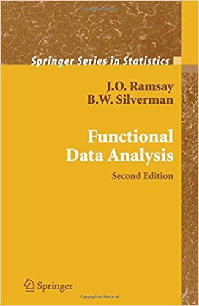
References
- “Functional and Shape Data Analysis”“, By Anuj Srivastava, Eric P Klassen
- Recent book on advances using more theoretical foundations
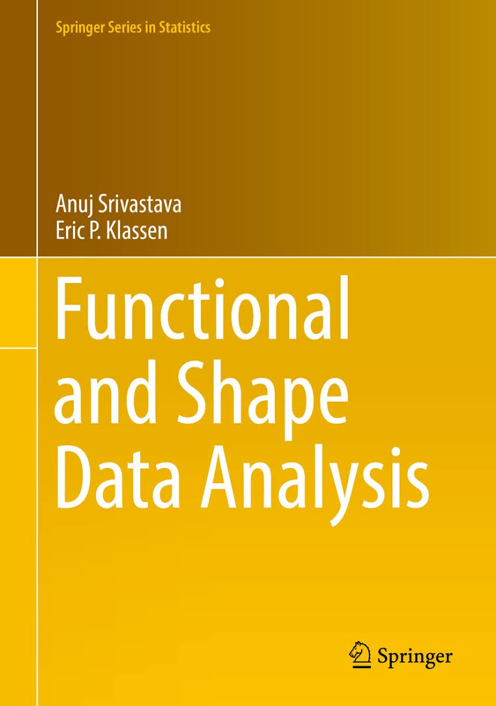
Introduction
- Problem of statistical analysis of function data (FDA) is important in a wide variety of applications
- Easily encounter a problem where the observations are real-valued functions on an interval, and the goal is to perform their statistical analysis
- By statistical analysis we mean to compare, align, average, and model a collection of random observations
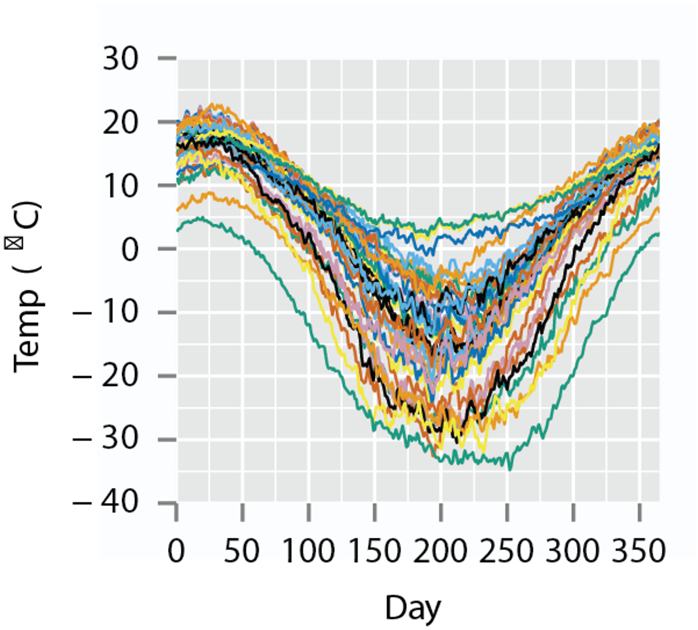
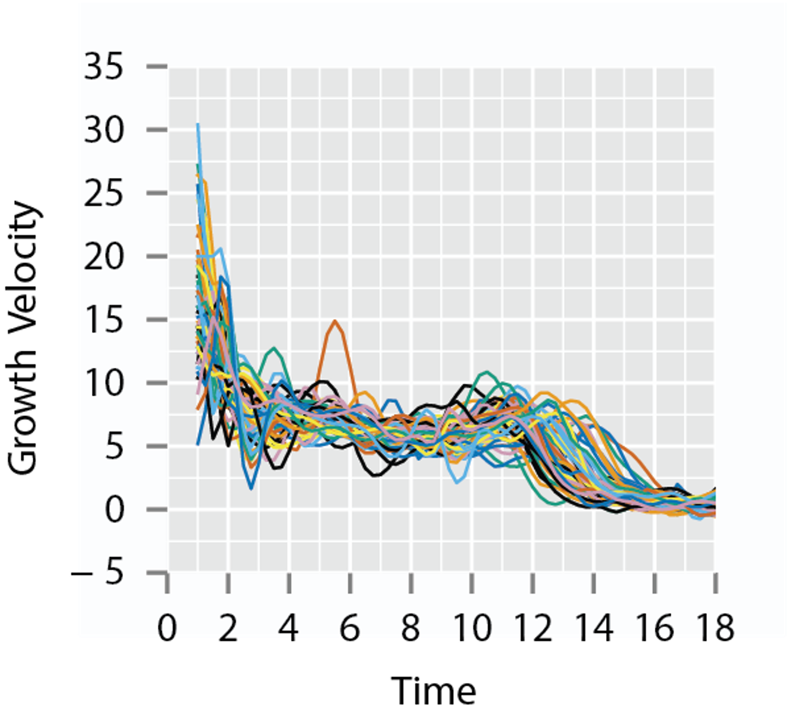
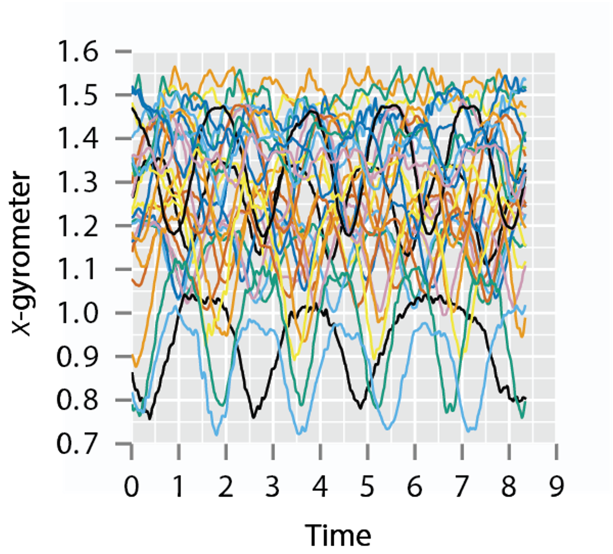
Introduction
- Questions then arise on how can we model the functions
- Can we use the functions to classify diseases?
- Can we use them as predictors in a regression model
- It is the same goal (questions) of any area of statistical study
- One problem occurs when performing these type of analyses is that functional data can contain variability in time (\(x\)-direction) and amplitude (\(y\)-direction)
- How do we account for and handle this variability in the models that are constructed from functional data
Types of Functional Data
- Real-valued functions, with interval domain: \(f:[a,b]\rightarrow\mathbb{R}\)
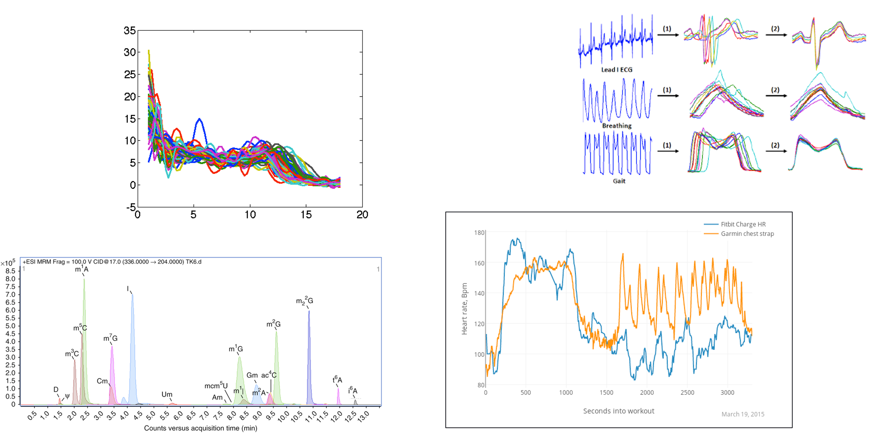
FDA Versus Multivariate Statistics
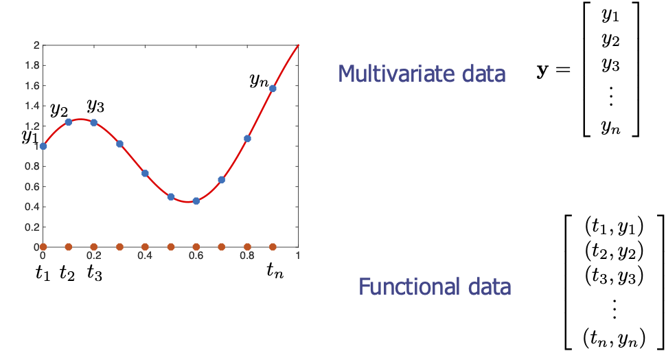
- Not all observations will have the same time indices
- Even if they do, we want the ability to change time indices
FDA Versus Multivariate Statistics
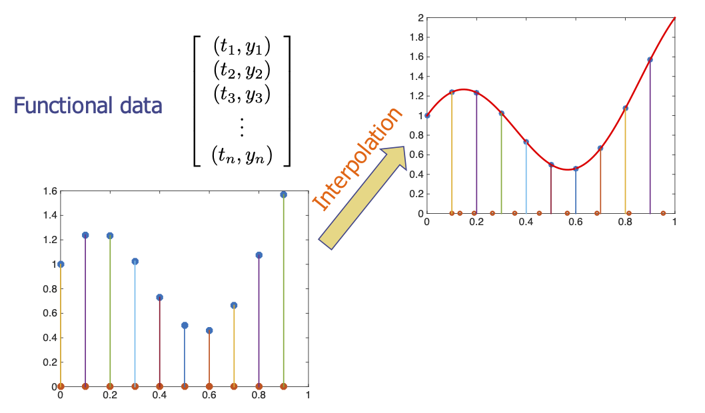
FDA Versus Multivariate Statistics
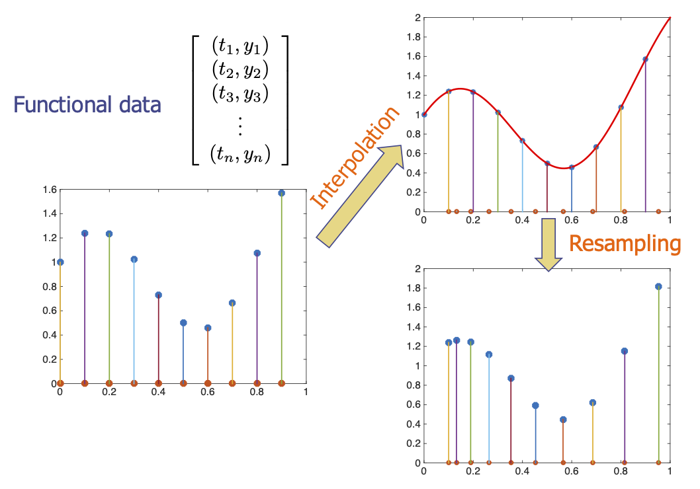
FDA Versus Multivariate Statistics
- In FDA, one develops the theory on function spaces and not finite vectors, and discretizes the functions only at the final step – computer implementation.

- Ulf Grenander: “Discretize as late as possible” (1924-2016)
- Even after discretization, we retain the ability to interpolate resample as needed!
Common Metric Structure for FDA
- Let \(f\) be a real-valued function with the domain \([0,1]\), can be extended to any domain
- Only functions that are absolutely continuous on \([0,1]\) will be considered
- The \(\mathbb{L}^2\) inner-product: \[\left\langle f_1,f_2 \right\rangle = \int_0^1 f_1(t)f_2(t)\,dt\]
- \(\mathbb{L}^2\) distance between functions: \[ ||f_1-f_2|| = \sqrt{\int_0^1 (f_1(t)-f_2(t))^2\,dt}\]
- From these we will build summary statistics, but how good are they?
Summary Statistics
- Assume that we have a collection of functions, \(f_i(t)\), \(i=1,\dots,N\) and we wish to calculate statistics on this set
- Mean Function \[\bar{f}(t) = \frac{1}{N}\sum_{i=1}^N f_i(t)\]
- Variance Function \[\mathop{\mathrm{var}}(f(t)) = \frac{1}{N-1}\sum_{i=1}^N \left(f_i(t) - \bar{f}(t)\right)^2\]
- and the standard deviation function is the point-wise square root of the variance function
Summary Statistics
- The covariance function summarizes the dependence of functions across different time values and is computed for all \(t_1\) and \(t_2\) \[\mathop{\mathrm{cov}}_f(t_1,t_2) = \frac{1}{N-1} \sum_{i=1}^N \left(f_i(t_1) - \bar{f}(t_1)\right)\left(f_i(t_2) - \bar{f}(t_2)\right)\]
- The correlation function is then computed using \[\mathop{\mathrm{corr}}_f(t_1,t_2) = \frac{\mathop{\mathrm{cov}}_f(t_1,t_2)}{\sqrt{\mathop{\mathrm{var}}(f(t_1))\mathop{\mathrm{var}}(f(t_2))}}\]
- Note: These all assume the functions are aligned in time, if not analysis will be affected
Phase Amplitude Separation
- All of these methods assume the data has no phase-variability or is aligned
- How does this affect the analysis?
- Can we account for it?
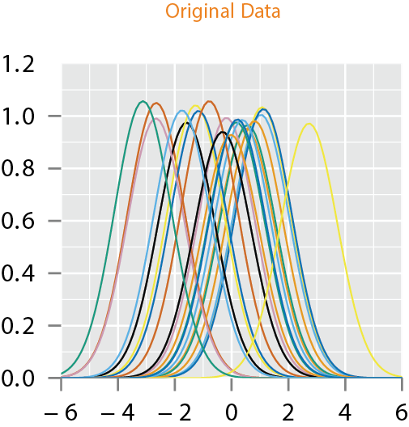
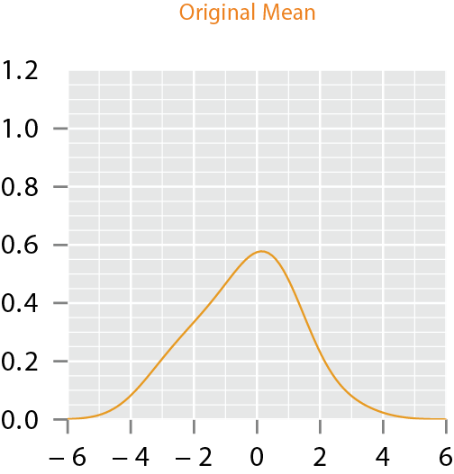
Motivation
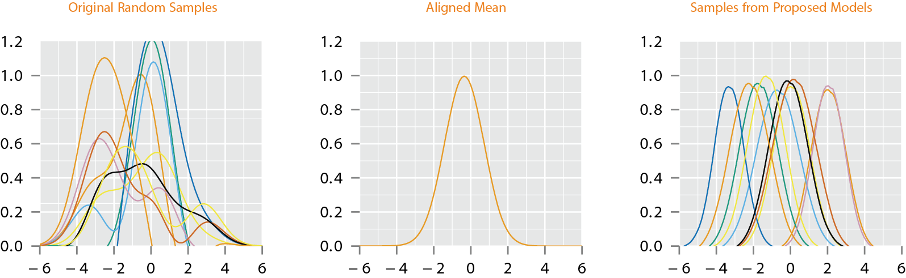
- If one performs fPCA on this data and imposes the standard independent normal models on fPCA coefficients, the resulting model will lack this unimodal structure
- A proper technique is to incorporate the phase and amplitude variability, into the model construction which in turn incorporates into the component analysis
Functional Data Alignment
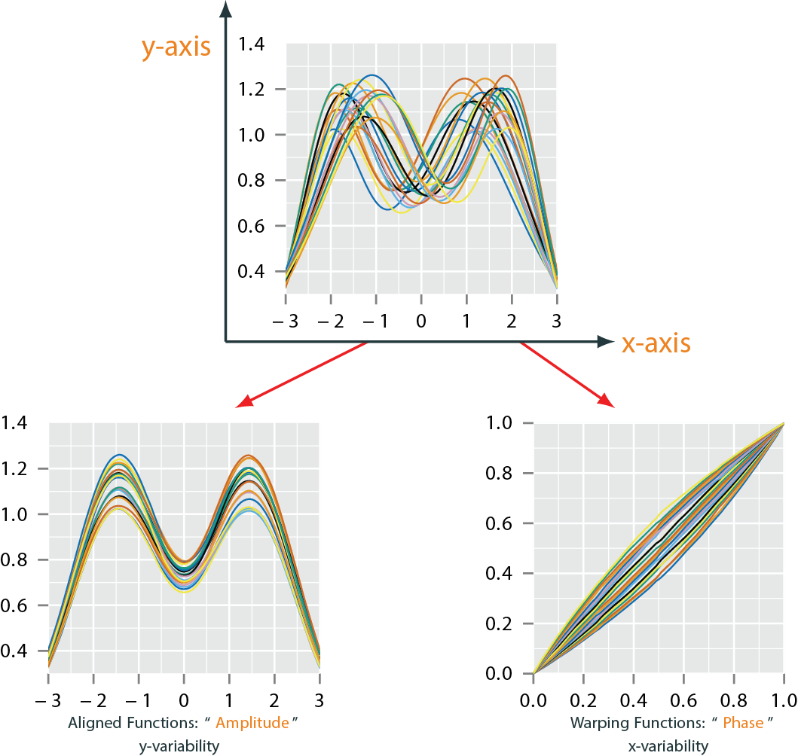
Functional Data Alignment
- There are few different methods that have been proposed (Ramsay, Mueller, Srivastava)
- We will focus on Elastic Method of (Srivastava, Wu, Tucker, Kurtek) as it uses a proper metric
- Let elements of the group \(\Gamma\) play the role of warping functions as the set of boundary-preserving diffeomorphisms, \(\gamma: [0,1] \to [0,1]\)
- For any \(f\), the operation, \(f\circ\gamma\) denotes the time warping of \(f\) by \(\gamma\)
Functional Data Alignment
- Problem: Under the standard \({\mathbb{L}^2}\) metric,
- The action of \(\Gamma\) does not act by isometries since \(\| f_1\circ \gamma - f_2 \circ \gamma\|\neq\| f_1 - f_2 \|\)
- Solutions:
- Use the square-root slope function or SRSF of \(f\) \[ q(t) = \mbox{sign}(\dot{f}(t)) \sqrt{ |\dot{f}(t)|} \]
- where \(\| q_1 - q_2 \| = \| (q_1, \gamma) - (q_2, \gamma) \|\) and \((q_1, \gamma) = (q_1 \circ \gamma)\sqrt{\dot{\gamma}}\)
- Leads to a distance on \({\mathcal F}/ \Gamma\): \(d_a(f_1, f_2) = \inf_{\gamma \in \Gamma} \|q_1 - (q_2,\gamma)\|\)
Pinching Problem
- Why use the SRSF?
- The \({\mathbb{L}^2}\) distance is a proper distance
- The action of \(\Gamma\) does act by isometries
- Solves the pinching problem
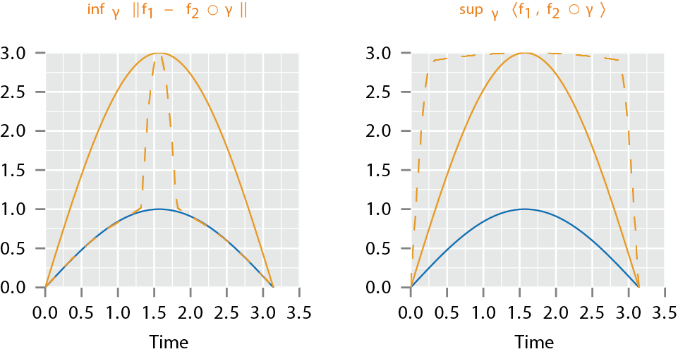
Elastic Function Alignment
- Alignment:
- Alignment is performed by finding the empirical Karcher mean \[ \mu_q = \mathop{\mathrm{arg\,min}}_{q \in {\mathbb{L}^2}} \sum_{i=1}^n \left( \inf_{\gamma_i \in \Gamma} \| q - (q_i, \gamma_i) \|^2 \right)\]
- Note that if \({\mu}_q\) is a minimizer of the cost function, then so is \(({\mu}_q ,\gamma)\) for any \(\gamma \in \Gamma\) since the metric is invariant to random warpings
- To make the choice unique we choose the \(\mu_q\) of the set \(\{ (\mu_q,\gamma) | \gamma \in \Gamma\}\) such that the mean of \(\{\gamma_i^*\}\) is identity
Elastic Function Alignment
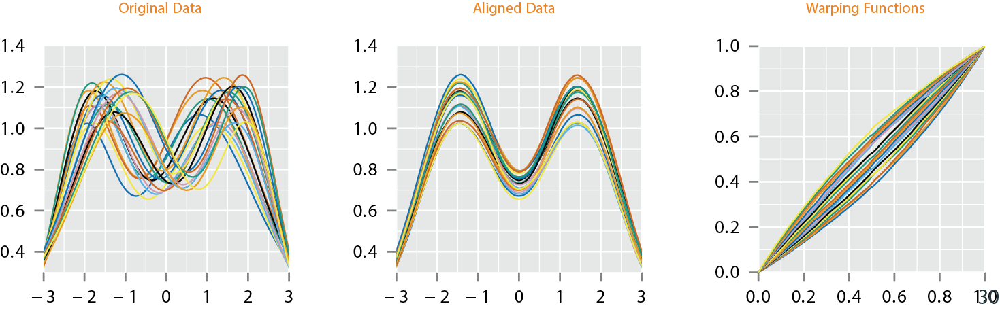
Why SRSF of \(\gamma_i\)
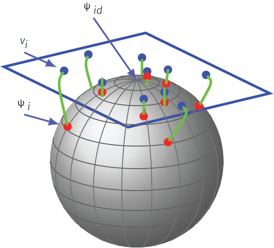
- \(\Gamma\) is a nonlinear manifold and it is infinite dimensional
- Represent an element \(\gamma \in \Gamma\) by the square-root of its derivative \(\psi = \sqrt{\dot{\gamma}}\)
- Important advantage of this transformation is that set of all such \(\psi\)s is a Hilbert sphere \({\mathbb{S}}_{\infty}\)
Functional Changepoint Problem
- Assume we have real-valued functions \(f_1,\dots,f_n\) that are absolutely continuous on the interval \([0,1]\)
- The standard changepoint problem assumes the data is from the following model: \[f_i = \mu + \delta \mathbb{1}(i > k^*) + \epsilon_i\]
- The point \(k^*\) labels the time of the unknown mean change
- The changepoint detection problem then becomes a hypothesis testing problem of \[ H_0: \delta = 0~~\text{vs}~~H_A: \delta\neq 0 \]
Functional Changepoint Problem
- Aue 2019 considers test statistic, \(T_n = \max_{1 \leq k \leq n} \lVert S_{n,k}\rVert^2\) where, \[S_{n,k} = \frac{1}{\sqrt{n}} \left( k\mu_k - k \mu_n\right)\]
- where \(\mu_k = k^{-1} \sum_{i=1}^k f_i\)
- Estimate of \(k^*\) \[\hat{k}^* =\arg\max_{1\leq k\leq n}\lVert S_{n,k}\rVert^2\]
- Does not take into account both amplitude and phase variability
Elastic Functional Changepoint
- We propose the model, based on the definition of \(q\) and \(\Gamma\) \[q_i = \left( (\mu_q + \delta_q \mathbb{1}(i > k^*) + \epsilon_i), \gamma_i^{-1}\right)\]
- Change point problem: \[ H_0: \delta_q = 0~~\text{vs}~~H_A: \delta_q \neq 0 \]
- Test Statistic \[S_{n,k} = \frac{1}{\sqrt{n}}\left(k\mu_q^k-k\mu_q^n\right)\]
- where, \(\mu_q^k = \arg\min_{q} \sum_{i=1}^k d_a(q,q_i)^2\)
Phase Changepoint Problem
- We consider a model for \(\gamma_i\) \[ \gamma_i =\begin{cases} \eta_i(\mu_{\gamma}) & \textrm{if } i \leq k^* \\ \eta_i(\nu_{\gamma}) & \textrm{if } i > k^* \end{cases} \]
- where \(\eta_i(\mu)\) denotes a random element of \(\Gamma\) with mean \(\mu \in \Gamma\)
- Change Point Problem \[ H_0: \mu_{\gamma}= \nu_{\gamma}~~\text{vs}~~H_A: \mu_{\gamma}\neq \nu_{\gamma} \]
- Test Statistic using Hilbert Sphere representation \[ S_{n,k} = \frac{1}{\sqrt{n}}\left(k\bar{v}^k - k \bar{v}^n\right) \]
- where \(\bar{v}^k\) is the shooting vector of the Karcher mean of the warping functions
Simulation Amplitude Changepoint
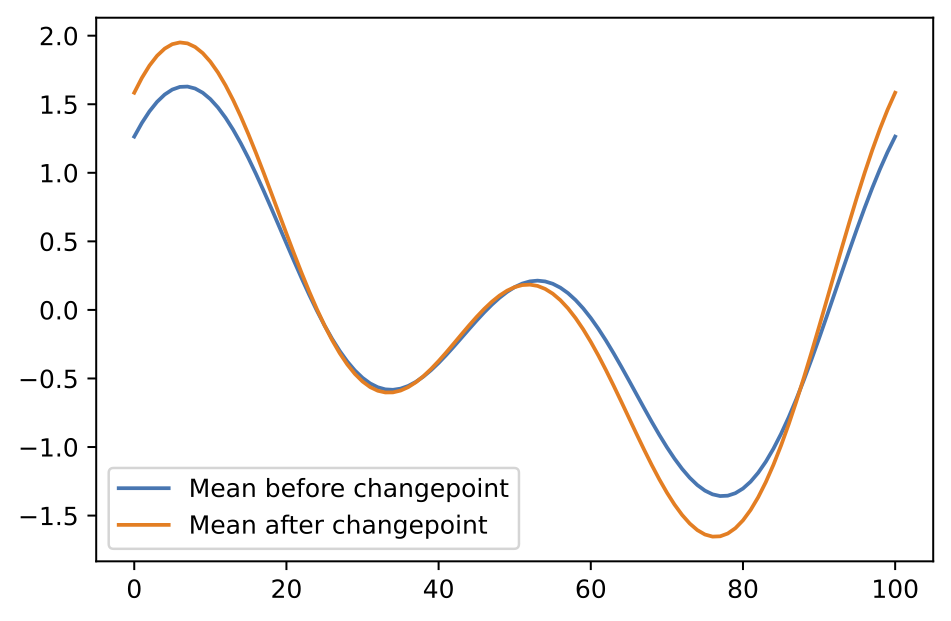
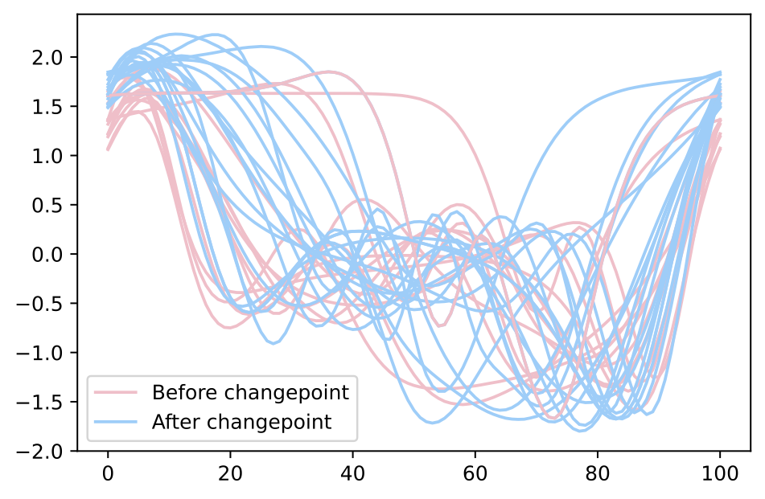
- Mean Functions \[ \begin{align*} \mu(t) &= a_0\cos(2\pi t) + b_0\sin(2\pi t) + a_1\cos(4\pi t) + b_1\sin(4\pi t) \\ \delta(t) &= \Delta\cos(2\pi t) + \Delta\sin(2\pi t) + \Delta\cos(4\pi t) + \Delta\sin(4\pi t) \end{align*} \]
- \(a_i\sim U[0,1]\) and \(b_i \sim U[0,1]\) and \(\Delta=0.16\)
Simulation Amplitude Changepoint
| Cross-Sectional | \(\Delta= 0\) | \(\Delta = 0.04\) | \(\Delta = 0.08\) | \(\Delta = 0.12\) | \(\Delta = 0.16\) |
|---|---|---|---|---|---|
| \(n=15\) | \(0.13\) | \(0.10\) | \(0.13\) | \(0.09\) | \(0.15\) |
| \(n=30\) | \(0.04\) | \(0.12\) | \(0.07\) | \(0.16\) | \(0.15\) |
| \(n=50\) | \(0.06\) | \(0.06\) | \(0.12\) | \(0.18\) | \(0.20\) |
| \(n=75\) | \(0.04\) | \(0.08\) | \(0.13\) | \(0.21\) | \(0.28\) |
- Proportion of simulations with estimated changepoint at the \(\alpha = 0.05\) level for the amplitude change.
- Good at controlling Type 1 error, but missing changepoint
Simulation Amplitude Changepoint
| Elastic | \(\Delta= 0\) | \(\Delta = 0.04\) | \(\Delta = 0.08\) | \(\Delta = 0.12\) | \(\Delta = 0.16\) |
|---|---|---|---|---|---|
| \(n=15\) | \(0.19\) | \(0.18\) | \(0.35\) | \(0.54\) | \(0.85\) |
| \(n=30\) | \(0.07\) | \(0.16\) | \(0.27\) | \(0.85\) | \(1.00\) |
| \(n=50\) | \(0.06\) | \(0.11\) | \(0.52\) | \(1.00\) | \(1.00\) |
| \(n=75\) | \(0.09\) | \(0.20\) | \(0.86\) | \(1.00\) | \(1.00\) |
- Proportion of simulations with estimated changepoint at the \(\alpha = 0.05\) level for the amplitude change.
- Performance increase over standard cross-sectional approach.
Simulation Phase Changepoint
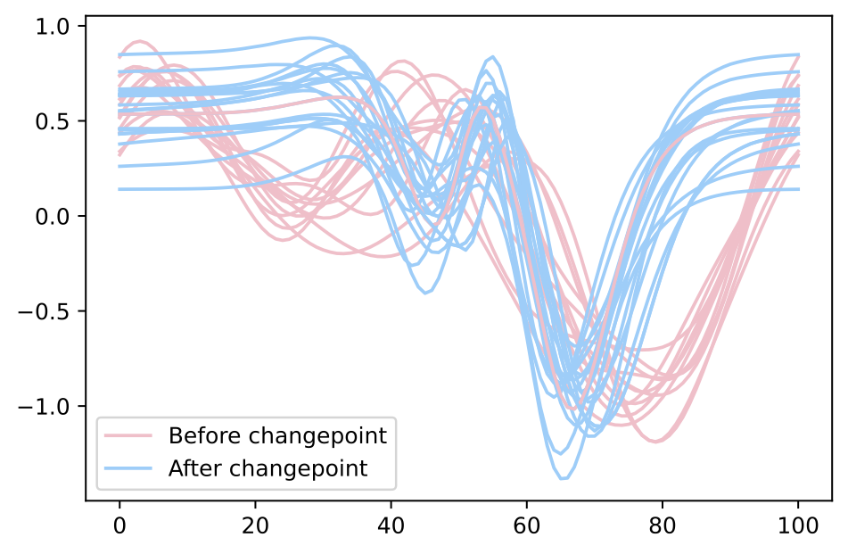
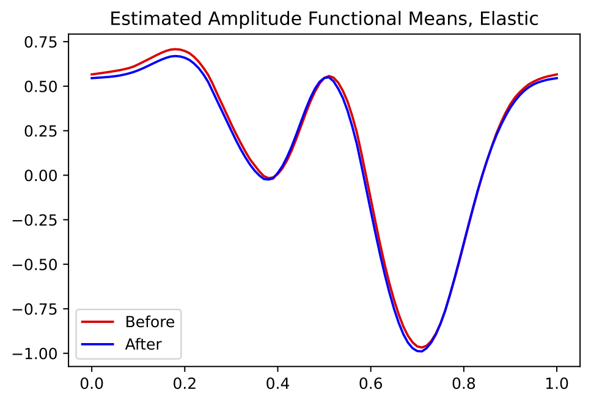
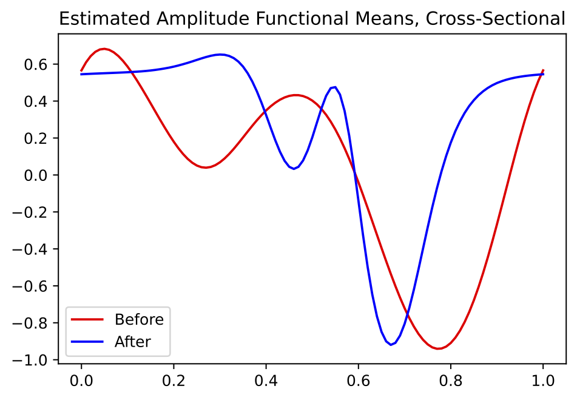
- Same set up as before
- We take \(\delta(t)=0\), and the warping functions have mean \(\gamma(t) = t\) before \(k^*\)
- After \(k^*\), the mean of the warping functions is a randomly-generated warping function with variance \(.15\)
Simulation Phase Changepoint
| Cross-Sectional | \(\Delta= 0\) | \(\Delta = 0.04\) | \(\Delta = 0.08\) | \(\Delta = 0.12\) | \(\Delta = 0.16\) |
|---|---|---|---|---|---|
| \(n=15\) | \(0.14\) | \(0.65\) | \(0.88\) | \(0.93\) | \(0.95\) |
| \(n=30\) | \(0.07\) | \(0.65\) | \(0.85\) | \(0.94\) | \(0.99\) |
| \(n=50\) | \(0.08\) | \(0.76\) | \(0.96\) | \(0.92\) | \(0.98\) |
| \(n=75\) | \(0.08\) | \(0.88\) | \(0.93\) | \(0.97\) | \(1.00\) |
- Proportion of simulations with estimated changepoint at the \(\alpha = 0.05\) level for the amplitude change.
- As \(n\) increases and \(\Delta\) gets larger, easier to detect the changepoint.
Simulation Phase Changepoint
| Elastic | \(\Delta= 0\) | \(\Delta = 0.04\) | \(\Delta = 0.08\) | \(\Delta = 0.12\) | \(\Delta = 0.16\) |
|---|---|---|---|---|---|
| \(n=15\) | \(0.06\) | \(0.41\) | \(0.81\) | \(0.81\) | \(0.93\) |
| \(n=30\) | \(0.03\) | \(0.61\) | \(0.82\) | \(0.95\) | \(0.97\) |
| \(n=50\) | \(0.04\) | \(0.75\) | \(0.95\) | \(0.95\) | \(0.98\) |
| \(n=75\) | \(0.00\) | \(0.88\) | \(0.92\) | \(0.97\) | \(1.00\) |
- Proportion of simulations with estimated changepoint at the \(\alpha = 0.05\) level for the amplitude change.
- Results are similar, but Cross-Sectional appraoch will not be able to identify the data-generating process.
MERRA-2 stratospheric temperature
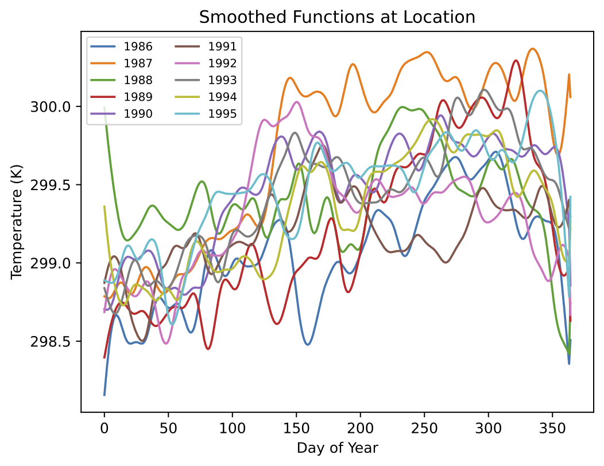
- Stratospheric temperature of the climate reanalysis data MERRA-2
- Using data from the years 1984-1998, we aim to evaluate changes related to the eruption of Mt. Pinatubo in June 1991
- We focus on daily stratospheric temperature near the 50 millibar pressure surface
Changepoint Results at One Location
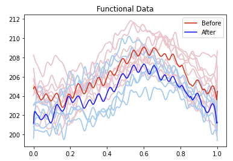
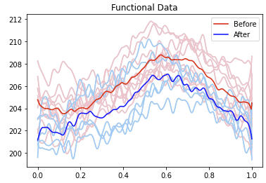
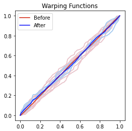
- The elastic approach appears to align weather patterns, maintaining cyclical behavior in the temperature throughout the year.
- In contrast, the cross-sectional approach averages these over years while ignoring phase variability.
- No phase change detected
Global Results
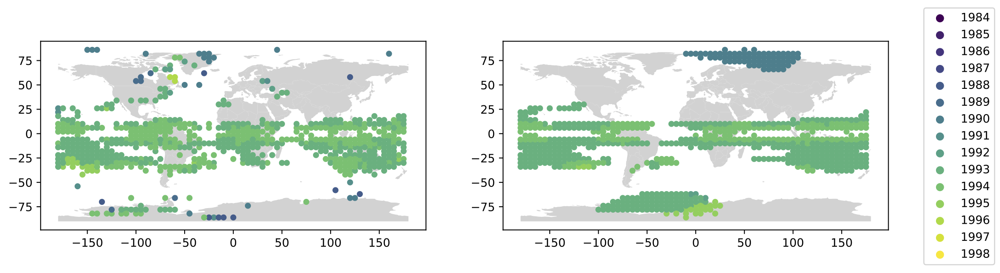
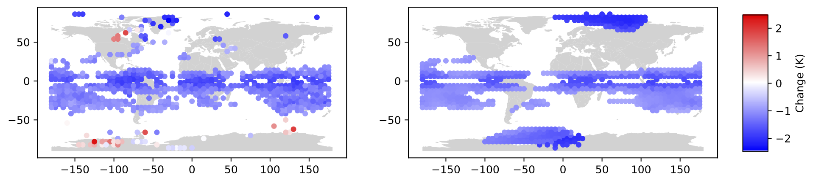
- Left: Elastic, Right: Cross-Sectional
Summary
- FDA is a very important problem area for statistics
- Can perform statistics using functions, but have to be aware of different set of issues/nuances
- Functional data often comes with phase variability that cannot be handled using standard \(\mathbb{L}^2\) framework
- Elastic FDA provides more flexibility than classical FDA
- Amongst the best alignment methods
- Also provides joint solutions for inferences along with alignments
- Theory and Methods work for functions, curves, surfaces, and images
Papers
J. D. Tucker and D. Yarger, “Elastic Functional Changepoint Detection of Climate Impacts from Localized Sources”, Envirometrics, 10.1002/env.2826, 2023.
Questions?
jdtuck@sandia.gov
http://research.tetonedge.net